Step 1
If LabVIEW is not running Launch it and open the EnFlo_Hub.vi as shown below

Click on the Calibration icon to open the calibration program.
Step 2
This is the Calibration.vi which should now be showing. It should have initialised itself to show the most recent calibration that has been carried out or be blank, as shown below, if this is the first calibration carried out using Calibration.vi on this machine
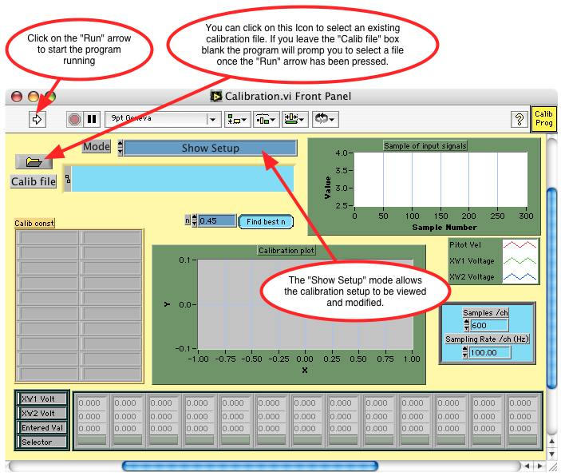Click on the Run arrow to show the calibration setup
Step 3
If the Calib file box on the Calibration.vi was left blank the file dialog will appear asking the user to choose a new or existing calibration file. The Calibration file created in this example is "/Users/paul_local/Documents/LabVIEW_data/Examples/Calib_Files/Mano_Calib.txt". The layout of this dialog box will be platform dependent.
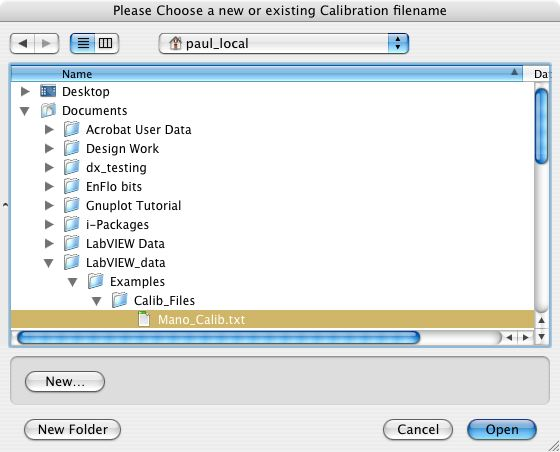Select the desired calibration filename
Step 4
The Calibration User input dialog should now be displayed
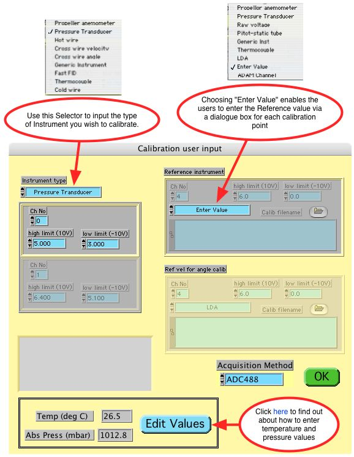Enter the voltage limits for the micromanometer voltage output which will enable the acquisition system to optimise the use of its A to D converter voltage range.
The Acquisition Method used in this example is the ADC488 which is an external Analogue to Digital convertor having it own onboard memory and is linked to the computer via a GPIB interface.
Press the green OK button after having set this panel appropriately
Step 5
The Pressure Transducer Setup.vi dialog should now be displayed
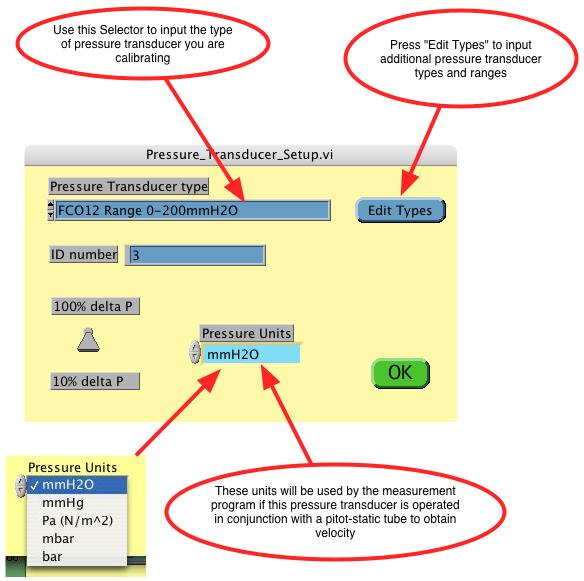Press the green OK button when you are ready to move on
Step 6
Now all the setup dialogs have been answered the Calibration.vi should look like this
In this example the micromanometer we are calibrating is connected to a pitot-static tube in the wind tunnel and so we will be controlling the pressure input to the transducer by changing the wind tunnel speed.
Step 7
If the wind tunnel you are working on has LabVIEW speed control, go to the EnFlo_Hub.vi and click on the icon Tunnel Speed Control in the User tab to launch the panel shown below, or manually control the tunnel speed
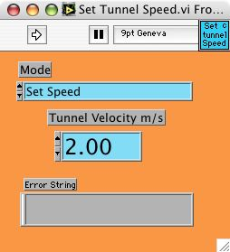Type in the desired Tunnel Velocity m/s value and click on the Run arrow to set the tunnel speed
Step 8
Now click back on the Calibration.vi to make it the active window or select it from the LabVIEW Window menu bar
The only remaining values to set on Calibration.vi front panel are the number of samples Samples/ch and the sampling rate Sampling Rate /ch(Hz).
Click on the Run arrow when the pressure transducer has settled at the first calibration value.
Step 9
After the micromanometer has been sampled for 6 seconds the Input Value Dialog should be displayed
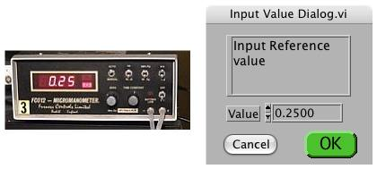Enter the averaged micromanometer display value into the Input Value Dialog.vi panel, then press the green OK button
Step 10
When the Calibration.vi stops running the first calibration point should be displayed

The voltage trace is shown in the plot labelled Sample of input signals, and the average voltage value of 0.062 is recorded in the lower array directly above the entered value of 0.25 mmH2O.
The time trace for each calibration point is saved in a separate Raw data file that can be viewed using Measurement.vi in the post processing mode.
The calibration constants A and B are NaN (Not a Number) since these cannot be evaluated from just one calibration point
Step 11
Now click back on the Set Tunnel Speed.vi to make it the active window or select it from the LabVIEW Window menu bar or change the tunnel speed manually
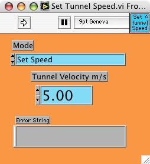Type in the desired Tunnel Velocity m/s value and click on the Run arrow to set the tunnel speed
Step 12
Now click back on the Calibration.vi to make it the active window or select it from the LabVIEW Window menu bar
Click on the Run arrow to take the next calibration point after the pressure transducer has settled
Step 13
After the micromanometer has been sampled for 6 seconds the Input Value Dialog should be displayed
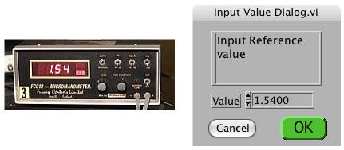Enter the averaged micromanometer display value into the Input Value Dialog.vi panel, then press the green OK button
Step 14
When the Calibration.vi stops running the first two calibration points should be displayed
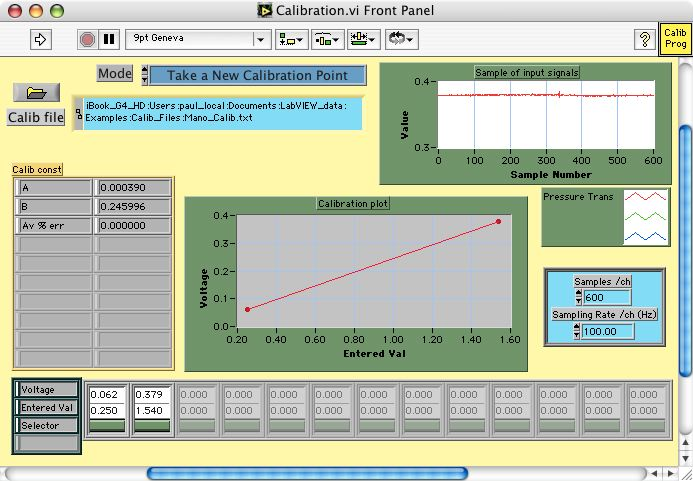The calibration constants A and B are now shown for the straight line fit for the equation
E = A + B * Pressure
where E is the micromanometer voltage output.
The Av % err is the square root of the mean square error in pressure divided by the average pressure. Obviously for a two point calibration this value will be zero.
To add the next calibration point repeat Step 11 to Step 13 for a tunnel speed of 7m/s
Step 15
When the Calibration.vi stops running 3 calibration points should be displayed
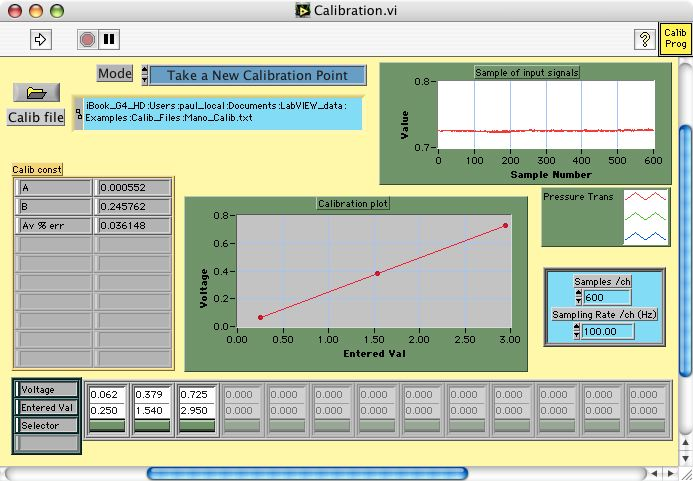To add the next calibration point repeat Step 11 to Step 13 for a tunnel speed of 10m/s
Step 16
When the Calibration.vi stops running 4 calibration points should be displayed
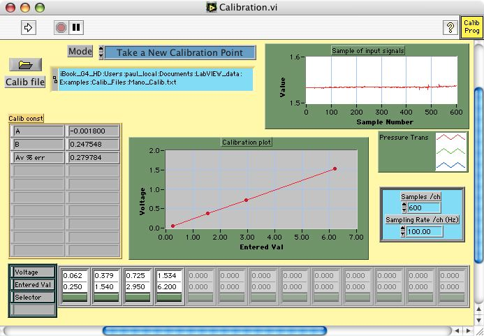This would be considered a good micromanometer calibration over the pressure range from 0.25 to 6.2 mmH2O since the Av % err is 0.28% which is quite low. For a reasonable calibration you would expect this value to be less than 1%.
The coefficients A and B stored in the calibration file, can now be used by Measurement.vi to convert the micromanometer voltage output to a reading of pressure using the equation
Pressure = (E - A) / B
where E is the micromanometer voltage output.